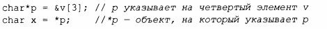
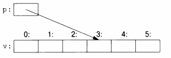
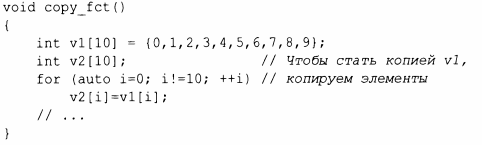
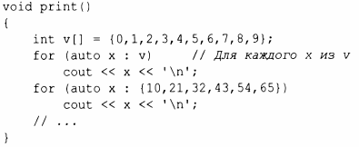
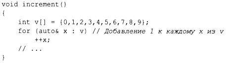
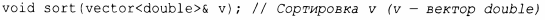
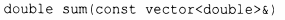
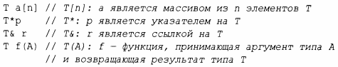

⇐1.6. Константы Содержание 1.7.1. Нулевой указатель⇒
Наиболее фундаментальной коллекцией данных является смежно расположенная последовательность элементов одного и того же типа, именуемая массивом. Фундаментально это именно то, что может предоставить аппаратное обеспечение. Массив элементов типа char может быть объявлен следующим образом:
char v[б]; //Массив из 6 символов
Аналогично указатель может быть объявлен следующим образом:
char*p; // Указатель на символ
В объявлениях [ ] означает "массив из", а * - "указатель на". Все массивы в качестве нижней границы имеют О, поэтому упомянутый выше массив v имеет шесть элементов - от v [О] до v [ 5] . Размер массива должен быть константным выражением (§ 1.6). Переменная указателя может хранить адрес объекта соответствующего типа:
В выражении унарный префикс * означает "содержимое", а & - "адрес". Результат показанного выше инициализированного определения графически может быть представлен следующим образом.
Рассмотрим копирование десяти элементов из одного массива в другой:
Эта инструкция for может быть прочтена как "установить i равным нулю; пока i не равно 10, копировать i-й элемент и увеличить i". При применении к целочисленной переменной или к переменной с плавающей точкой оператор инкремента++ просто добавляет 1. С++ предлагает также более простую инструкцию for, которая называется циклом for для диапазона, для простейшего обхода последовательности:
Первый цикл для диапазона можно прочитать как "для каждого элемента v от первого до последнего поместить его копию в х и распечатать ее". Обратите внимание, что не нужно указывать границы массива, когда мы инициализируем его списком. Цикл for для диапазона может использоваться для любой последовательности элементов (§ 12.1 ).
Если мы не хотим копировать значения из v в переменную х и хотим, чтобы вместо этого х была ссылкой, ссылающейся на элемент, можем написать:
Здесь в объявлении унарный суффикс & означает "ссылка на". Ссылка похожа на указатель, за исключением того, что вам не нужно использовать префикс * для доступа к значению, на которое указывает ссылка. Кроме того, после инициализации ссылка не может быть перенацелена (не может ссылаться на другой объект).
Ссылки особенно полезны для указания аргументов функции. Например:
Используя ссылку, мы гарантируем, что при вызове sort (my_vec) мы не копируем my _ vec и что будет отсортирован именно my_vec, а не его копия.
Если мы не хотим изменять аргумент, но при этом хотим избежать затрат на копирование, мы используем константную ссылку (§ 1.6). Например:
Функции, принимающие константные ссылки, весьма распространены.
При использовании в объявлениях операторы (такие, как &, * или []) называются операторами деклараторов:
